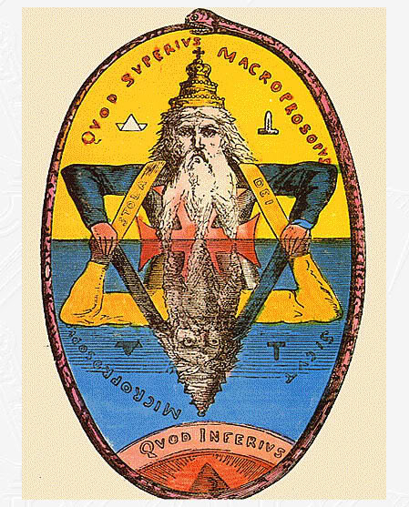

Sobre o Hermetismo

"Os mais interessados por ocultismo, alquimia e esoterismo provavelmente já ouviram falar sobre os sete princípios herméticos do universo, também chamados de 7 Leis Herméticas. Porém, quem ainda não tem intimidade com o assunto, pode ler a palavra "hermético" e associá-la imediatamente à expressão "hermeticamente fechado" sem fazer relação alguma com a sua origem.
Na verdade, estes dois usos desta palavra originam de uma mesma figura, muito importante para os estudos do ocultismo: Hermes Trismegisto.
Também chamado de Hermes "três vezes grande" (significado de "Trismegisto" em latim), os escritos atribuídos a Hermes são tanto de ordem filosófica, como os que buscam a essência de todas as religiões, como de ordem técnica, como a descrição de procedimentos ligados à alquimia. É justamente daí que vem a expressão hermeticamente fechado: práticas associadas a Hermes incluem "magias" para "fechar" a energia de objetos, além de possuirem em seu próprio cerne um conjunto de princípios que visam fechar agrupar todas as leis que regem o universo e sua manifestação.
No caso da astrologia, interessam mais os escritos filosóficos de Hermes, que estão espalhados em diversas obras que tratam da busca pela grande Verdade, aquilo que une todas as religiões. É nelas que reside o maior impacto de Hermes para a humanidade, já que muitas religiões antigas ou atuais, orientais ou ocidentais, beberam de sua fonte.
Por ter nascido - ou ser diretamente associado ao Egito, local de grande intercâmbio cultural no mundo antigo, o pensamento hermético acabou se espalhando com facilidade para outras regiões e sua influência pode ser vista em diversas religiões e abordagens da espiritualidade - desde a religião muçulmana até a cristã, passando pela astrologia e filósofos importantes como Sócrates e Platão."